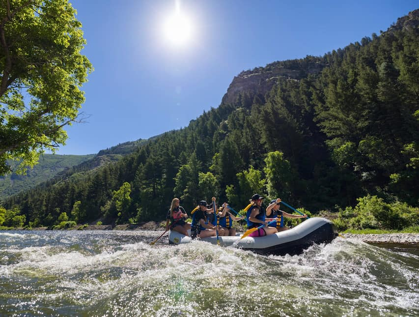
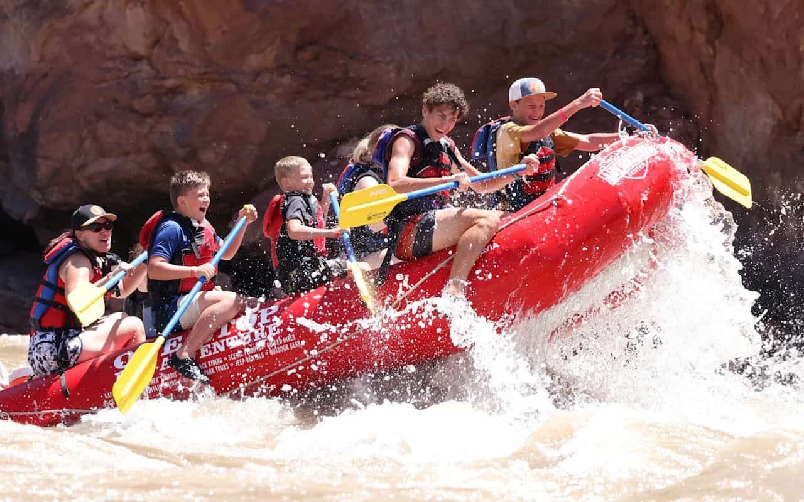
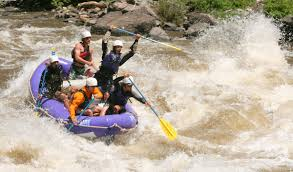

Provo River Rafting

A 1.5-hour adrenaline-pumping ride. Perfect for beginners. Tubing also available
Explore our packages of adventures available made to all levels begginers to pros.
Contact Us to Book
A 1.5-hour adrenaline-pumping ride. Perfect for beginners. Tubing also available

This is a perfect family trip! Children as young as 5 are invited to participate. Some guides will permit younger kids. The short duration of the trip is good for families uncertain about how their children will react to spending a long amount of time on a raft.

The Dolores River rafting trek lasts around 32 miles. This typically takes 3 days to complete, but some companies offer longer trips. These trips offer the advantages of a lesser-known river: small group sizes, remote landscape, and no river congestion. Trips are only run in April and May (rarely in June). Rapids are challenging, ranging from classes 2 through 4. The hiking is also incredible; the land along the river's course ranges from the foothills of the Rocky Mountains, to the red rock canyons of southeastern Utah. You won't want to forget your hiking boots and camera on this trip! Meals and snacks are provided; camping equipment is necessary. Bring your own, or plan to rent from the outfitter company. Inquire for details.
III - IV - ADVANCED TRIP
| Trip Name | Duration | Difficulty | Price (Kids 50% OFF) |
|---|---|---|---|
| Provo River | 1.5 hours | Begginers | $35/person ($40 on weekends) |
| Fish Towers | 2 hours | begginers and intermediate | $45/person ($55 on weekends) |
| Dolores River | 3 DAYS | Class III - IV | $65/person ($75 on weekends) |